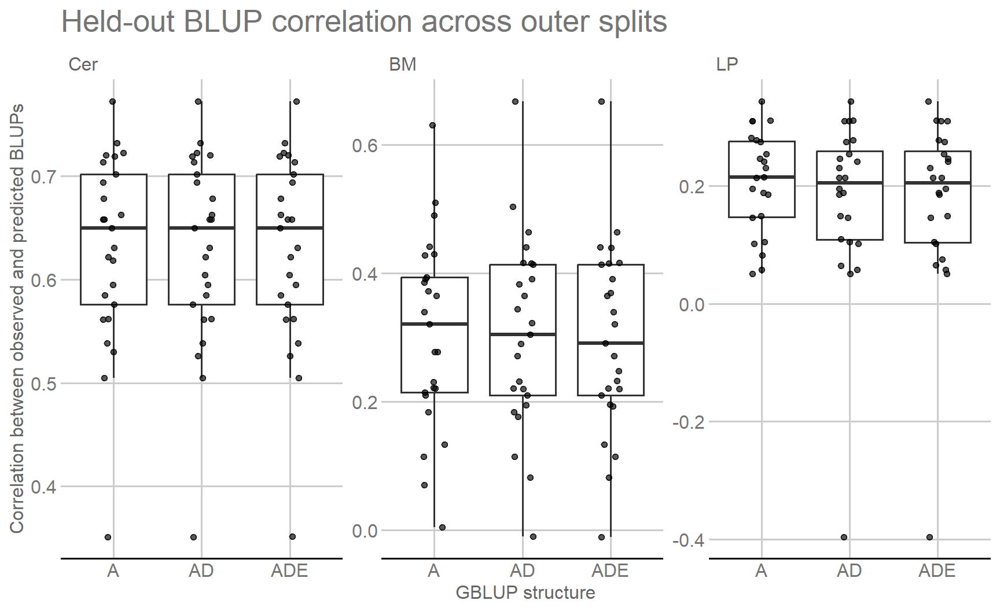
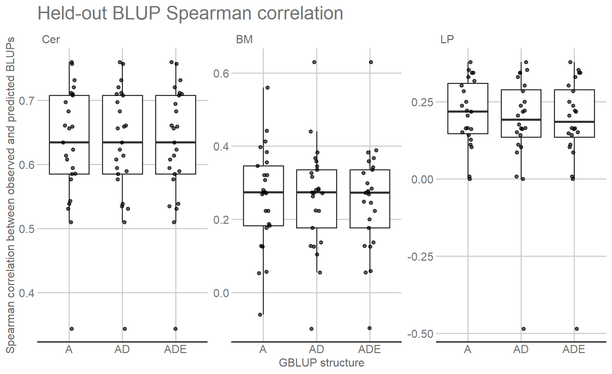
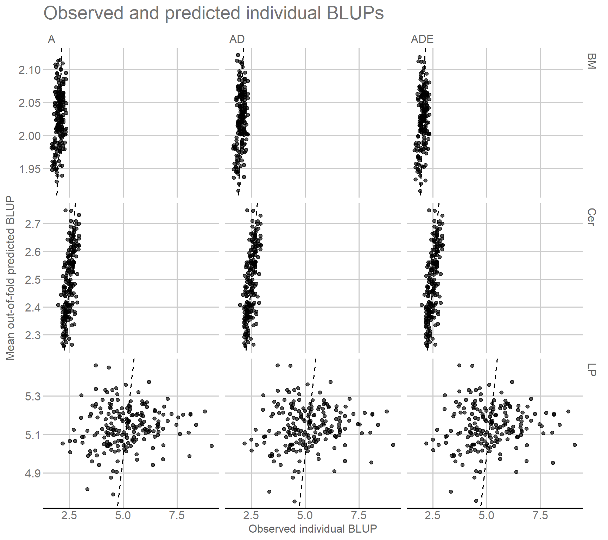

Real data: GBLUP A, AD, and ADE
Weverton Gomes da Costa
2026-11-18
Last updated: 2026-11-18
Checks: 7 0
Knit directory:
Genomic-Prediction-using-Regularized-Artificial-Neural-Networks/
This reproducible R Markdown analysis was created with workflowr (version 1.7.2). The Checks tab describes the reproducibility checks that were applied when the results were created. The Past versions tab lists the development history.
Great! Since the R Markdown file has been committed to the Git repository, you know the exact version of the code that produced these results.
Great job! The global environment was empty. Objects defined in the global environment can affect the analysis in your R Markdown file in unknown ways. For reproduciblity it’s best to always run the code in an empty environment.
The command set.seed(20260821) was run prior to running
the code in the R Markdown file. Setting a seed ensures that any results
that rely on randomness, e.g. subsampling or permutations, are
reproducible.
Great job! Recording the operating system, R version, and package versions is critical for reproducibility.
Nice! There were no cached chunks for this analysis, so you can be confident that you successfully produced the results during this run.
Great job! Using relative paths to the files within your workflowr project makes it easier to run your code on other machines.
Great! You are using Git for version control. Tracking code development and connecting the code version to the results is critical for reproducibility.
The results in this page were generated with repository version 4c0ca12. See the Past versions tab to see a history of the changes made to the R Markdown and HTML files.
Note that you need to be careful to ensure that all relevant files for
the analysis have been committed to Git prior to generating the results
(you can use wflow_publish or
wflow_git_commit). workflowr only checks the R Markdown
file, but you know if there are other scripts or data files that it
depends on. Below is the status of the Git repository when the results
were generated:
Ignored files:
Ignored: .Rhistory
Ignored: .Rproj.user/
Ignored: .github/
Ignored: .local/
Ignored: CONTRIBUTING.md
Ignored: data/dados_reais/geno_real.rds
Ignored: output/real/ann/figures/
Ignored: output/real/audit/figures/
Ignored: output/real/comparison/figures/
Ignored: output/real/gblup/figures/
Ignored: output/real/phenotype/figures/
Ignored: output/simulated/gblup/figures/
Ignored: output/simulated/m01/
Ignored: output/simulated/m02/
Ignored: output/simulated/m03/
Ignored: output/simulated/m04/
Ignored: output/simulated/m05/
Ignored: renv/library/
Ignored: renv/staging/
Note that any generated files, e.g. HTML, png, CSS, etc., are not included in this status report because it is ok for generated content to have uncommitted changes.
These are the previous versions of the repository in which changes were
made to the R Markdown (analysis/real_data_gblup.Rmd) and
HTML (docs/real_data_gblup.html) files. If you’ve
configured a remote Git repository (see ?wflow_git_remote),
click on the hyperlinks in the table below to view the files as they
were in that past version.
| File | Version | Author | Date | Message |
|---|---|---|---|---|
| Rmd | 4c0ca12 | WevertonGomesCosta | 2026-11-18 | docs(real): finalize R04A GBLUP tutorial |
| Rmd | 15bfb23 | GitHub | 2026-11-16 | docs: standardize scientific documentation and terminology (#19) |
| html | 15bfb23 | GitHub | 2026-11-16 | docs: standardize scientific documentation and terminology (#19) |
| Rmd | c836215 | GitHub | 2026-11-16 | docs(site): publish real-data tutorial and synchronized comparisons (#18) |
| html | c836215 | GitHub | 2026-11-16 | docs(site): publish real-data tutorial and synchronized comparisons (#18) |
| Rmd | 800de50 | WevertonGomesCosta | 2026-11-12 | Add real-data GBLUP A AD and ADE analysis |
| html | 800de50 | WevertonGomesCosta | 2026-11-12 | Add real-data GBLUP A AD and ADE analysis |
| Rmd | a6a1d2f | WevertonGomesCosta | 2026-11-12 | Remove obsolete real-data workflow and diagnostics |
| html | a6a1d2f | WevertonGomesCosta | 2026-11-12 | Remove obsolete real-data workflow and diagnostics |
| html | cdbac19 | WevertonGomesCosta | 2026-11-09 | Build real-data workflowr pages |
| Rmd | 4fa5d7c | WevertonGomesCosta | 2026-11-05 | Add audited real-data workflow through GBLUP-ADE |
GBLUP models for the real-data analysis
1. Objective
This module applies genomic best linear unbiased prediction (GBLUP) to the individual phenotypic BLUPs prepared in R01. Three previously specified models use different genomic covariance structures, while all models share the outer assessment partitions established in R03:
The three prespecified structures are fitted using the same 25 outer cross-validation splits. For each trait and split, the models use the same analysis individuals and are evaluated on the same 39 assessment individuals.
The response is the individual BLUP obtained from the preceding phenotypic mixed-model analysis. Within each genomic fitting task, the 39 assessment BLUPs are masked before estimating the genomic effects. They are subsequently used to evaluate held-out predictions. The upstream phenotypic BLUP estimation is not repeated inside each genomic fold.
The functional workflow is:
receive aligned genotypes, BLUPs, and validation partitions → construct genomic relationship matrices → define the three GBLUP structures → organize the fitting tasks → obtain out-of-fold predictions → examine numerical diagnostics and predictive metrics → summarize individual rankings → deliver the results for comparison with the ANN models.
2. Packages and dependencies
The packages below support different stages of the tutorial.
sommer fits GBLUP models and constructs genomic
relationship matrices; ggplot2 produces predictive figures;
ggthemes provides their graphical theme; and
kableExtra adds horizontal scrolling to the wide ranking
table. The knitr package, already used to render this
document, formats the tables. Input files and parameter values appear
only where they are needed.
library(sommer) # Fit genomic mixed models.
library(ggplot2) # Create prediction and diagnostic figures.
library(ggthemes) # Apply a consistent visual theme.
library(kableExtra) # Make wide tables horizontally scrollable.3. Genomic data and cross-validation
The analysis receives two saved R objects: a quality-controlled dataset from R02 and the fixed cross-validation partitions from R03. The first contains the genotype matrix and the precomputed phenotypic BLUPs; the second identifies which individuals belong to each analysis and assessment set. Individual identifiers link genotypes, BLUPs, and predictions throughout the module.
3.1 Input objects
The first readRDS() retrieves the processed genotype and
phenotype data. The second retrieves the five-repetition, five-fold
outer validation design. The genotype matrix is then converted to an R
matrix, while trait names and individual identifiers are taken from the
previously prepared object; the pipeline does not reconstruct these
inputs.
common <- readRDS("output/real/audit/preprocessed_real_common.rds")
cv <- readRDS("output/real/validation/real_cv_design.rds")
geno <- as.matrix(common$genotype)
blups <- common$phenotype
traits <- common$traits
ids <- rownames(geno)3.2 Outer cross-validation partitions
The assessment assignments are summarized into one row for each outer
split. Repetition identifies the repetition,
OuterFold its fold, and SplitID links that row
to the corresponding lists of training and assessment IDs. Sorting by
repetition and fold makes the subsequent task grid easier to read
without modifying the original partitions.
# Identify the 25 predefined assessment partitions from R03.
outer_meta <- unique(cv$outer_assignments[, c("Repetition", "OuterFold", "SplitID")])
outer_meta <- outer_meta[order(outer_meta$Repetition, outer_meta$OuterFold), , drop = FALSE]
rownames(outer_meta) <- NULL3.3 Input summary
The table summarizes the imported objects. Population size, marker count, traits, and split count are obtained directly from the data. Training and assessment sizes are read from the first saved outer split, which follows the same 156/39 allocation as the other partitions defined in R03. The GBLUP structures are introduced separately in Section 5.
input_summary <- data.frame(
Item = c(
"Individuals",
"Markers after QC",
"Traits",
"Outer splits",
"Outer analysis size",
"Outer assessment size"
),
Value = c(
nrow(geno),
ncol(geno),
length(traits),
nrow(outer_meta),
length(cv$outer_splits[[1L]]$analysis_ids),
length(cv$outer_splits[[1L]]$assessment_ids)
),
stringsAsFactors = FALSE
)
knitr::kable(
input_summary,
format = "html",
caption = "Common inputs used by the GBLUP models",
row.names = FALSE,
table.attr = 'class="table table-striped table-hover table-bordered" style="width:100%;"'
)| Item | Value |
|---|---|
| Individuals | 195 |
| Markers after QC | 20887 |
| Traits | 3 |
| Outer splits | 25 |
| Outer analysis size | 156 |
| Outer assessment size | 39 |
The validation object is consumed without modification. Consequently, A, AD, and ADE are compared on identical training and held-out individuals.
4. Genomic relationship matrices
The 20,887 markers retained after the preceding quality-control stage are used to construct three genomic covariance structures, each indexed by the same 195 individuals:
- A (additive): relates individuals through their additive marker effects;
- D (dominance): describes marker-derived dominance relationships;
- E (additive-by-additive): describes the
second-order epistatic relationship specified by
sommer::E.mat(type = "A#A").
The min.MAF = 0 arguments do not introduce an additional
MAF threshold in this module. All three matrices are built from the
already-filtered panel. Their dimensions, symmetry, finite entries, and
mean diagonals are summarized in the following table.
# Construct additive, dominance, and additive-by-additive kernels.
kernel_start <- proc.time()[["elapsed"]]
A_matrix <- sommer::A.mat(geno, min.MAF = 0)
D_matrix <- sommer::D.mat(geno, nishio = TRUE, min.MAF = 0)
E_matrix <- sommer::E.mat(geno, nishio = TRUE, type = "A#A", min.MAF = 0)
kernel_seconds <- proc.time()[["elapsed"]] - kernel_start
# Label rows and columns using the common individual identifiers.
rownames(A_matrix) <- ids
colnames(A_matrix) <- ids
rownames(D_matrix) <- ids
colnames(D_matrix) <- ids
rownames(E_matrix) <- ids
colnames(E_matrix) <- ids
kernel_summary <- data.frame(
Kernel = c("Additive", "Dominance", "Epistatic_AxA"),
Rows = c(nrow(A_matrix), nrow(D_matrix), nrow(E_matrix)),
Columns = c(ncol(A_matrix), ncol(D_matrix), ncol(E_matrix)),
Symmetric = c(
isTRUE(all.equal(A_matrix, t(A_matrix), tolerance = 1e-8)),
isTRUE(all.equal(D_matrix, t(D_matrix), tolerance = 1e-8)),
isTRUE(all.equal(E_matrix, t(E_matrix), tolerance = 1e-8))
),
Finite = c(all(is.finite(A_matrix)), all(is.finite(D_matrix)),
all(is.finite(E_matrix))),
Mean_diagonal = c(mean(diag(A_matrix)), mean(diag(D_matrix)),
mean(diag(E_matrix))),
Kernel_build_seconds = rep(kernel_seconds, 3L),
stringsAsFactors = FALSE
)The following table presents the dimensions and numerical summaries of the additive, dominance, and additive-by-additive relationship matrices.
knitr::kable(
kernel_summary,
format = "html",
caption = "Genomic relationship matrices used by the three GBLUP structures",
digits = 6,
row.names = FALSE,
table.attr = 'class="table table-striped table-hover table-bordered" style="width:100%;"'
)| Kernel | Rows | Columns | Symmetric | Finite | Mean_diagonal | Kernel_build_seconds |
|---|---|---|---|---|---|---|
| Additive | 195 | 195 | TRUE | TRUE | 0.339623 | 1.54 |
| Dominance | 195 | 195 | TRUE | TRUE | 0.631842 | 1.54 |
| Epistatic_AxA | 195 | 195 | TRUE | TRUE | 0.140144 | 1.54 |
dir.create("output/real/gblup", recursive = TRUE, showWarnings = FALSE)
write.csv(kernel_summary, "output/real/gblup/real_gblup_kernel_summary.csv",
row.names = FALSE)5. Fixed candidate structures
The fitted response is the precomputed individual phenotypic BLUP. For the three fixed GBLUP structures, the random effects are described by
Here, is the intercept, is the additive effect, is the dominance effect, is the additive-by-additive effect, and is the residual. Each structure includes only its specified components. The estimated intercept and applicable genomic effects are summed to obtain predictions on the BLUP scale.
Each row in the next table identifies a model and the genomic effects included in its covariance specification. The labels are used unchanged in the task grid, saved predictions, and later results.
model_structures <- data.frame(
Structure = c(
"A",
"AD",
"ADE"
),
Model = c(
"GBLUP_A",
"GBLUP_AD",
"GBLUP_ADE"
),
Genomic_components = c(
"Additive",
"Additive + dominance",
"Additive + dominance + additive-by-additive epistasis"
),
stringsAsFactors = FALSE
)
knitr::kable(
model_structures,
format = "html",
caption = "Fixed GBLUP candidate structures",
row.names = FALSE,
table.attr = 'class="table table-striped table-hover table-bordered" style="width:100%;"'
)| Structure | Model | Genomic_components |
|---|---|---|
| A | GBLUP_A | Additive |
| AD | GBLUP_AD | Additive + dominance |
| ADE | GBLUP_ADE | Additive + dominance + additive-by-additive epistasis |
The three structures remain fixed throughout the analysis. Their predictions are evaluated using the same validation partitions and predefined metrics.
6. Evaluation grid
The common grid contains three traits, 25 outer splits, and three fixed GBLUP structures:
These are distinct adjustments, not statistically independent observations, because the analysis sets overlap across repetitions.
# Cross each characteristic with the 25 splits and three fixed structures.
task_table <- data.frame(
Dataset = character(0), Trait = character(0), Repetition = integer(0),
OuterFold = integer(0), SplitID = character(0), Structure = character(0),
Model = character(0), TaskID = character(0), stringsAsFactors = FALSE
)
for (trait in traits) {
for (split_row in seq_len(nrow(outer_meta))) {
for (model_row in seq_len(nrow(model_structures))) {
split_id <- outer_meta$SplitID[split_row]
structure <- model_structures$Structure[model_row]
task_table <- rbind(task_table, data.frame(
Dataset = "real", Trait = trait,
Repetition = outer_meta$Repetition[split_row],
OuterFold = outer_meta$OuterFold[split_row],
SplitID = split_id, Structure = structure,
Model = model_structures$Model[model_row],
TaskID = paste(trait, split_id, structure, sep = "_"),
stringsAsFactors = FALSE
))
}
}
}
rownames(task_table) <- NULL
task_summary <- as.data.frame(table(task_table$Trait, task_table$Structure),
stringsAsFactors = FALSE)
names(task_summary) <- c("Trait", "Structure", "Tasks")
knitr::kable(task_summary, format = "html",
caption = "Number of outer fitting tasks by trait and GBLUP structure",
row.names = FALSE,
table.attr = 'class="table table-striped table-hover table-bordered" style="width:100%;"')| Trait | Structure | Tasks |
|---|---|---|
| BM | A | 25 |
| Cer | A | 25 |
| LP | A | 25 |
| BM | AD | 25 |
| Cer | AD | 25 |
| LP | AD | 25 |
| BM | ADE | 25 |
| Cer | ADE | 25 |
| LP | ADE | 25 |
7. Fit A, AD, and ADE in every outer split
For each task, 156 individuals supply response information for
fitting. The remaining 39 assessment BLUPs are replaced by
NA before sommer::mmes() is called. Their
observed values are recovered only for evaluating the resulting
predictions. The marker-derived genomic relationships are common to the
full panel of genotyped candidates; assessment phenotypes do not enter
this GBLUP fitting step.
The model-fitting chunk documents the full fitting procedure without running the 225 adjustments during routine rendering. The subsequent export chunk shows how to save the results and is likewise disabled; the tutorial then reads the persisted files for its numerical summaries and figures.
For reproducibility, the common numerical settings are defined
immediately before the model-fitting code:
SEED_GLOBAL = 20261105L fixes the random seed,
N_ITERS_SOMMER = 50L sets the maximum number of
sommer iterations per fit, and TOL_LLIK = 1e-4
is passed to the tolParConvLL convergence-tolerance
argument. The same settings are used for all 225 tasks.
# Use the same numerical settings for every trait, split, and GBLUP structure.
SEED_GLOBAL <- 20261105L
N_ITERS_SOMMER <- 50L
TOL_LLIK <- 1e-4
set.seed(SEED_GLOBAL)
run_start <- proc.time()[["elapsed"]]
result_list <- vector("list", nrow(task_table))
prediction_list <- vector("list", nrow(task_table))
for (i in seq_len(nrow(task_table))) {
# Locate the outer analysis and assessment individuals.
task <- task_table[i, , drop = FALSE]
trait <- task$Trait
structure <- task$Structure
split <- cv$outer_splits[[task$SplitID]]
analysis_index <- match(split$analysis_ids, ids)
assessment_index <- match(split$assessment_ids, ids)
response_vector <- blups[[trait]]
# Mask assessment BLUPs before estimating the genomic effects.
id_factor <- factor(ids, levels = ids)
dat <- data.frame(y = response_vector, id = id_factor,
idd = id_factor, ide = id_factor)
dat$y[assessment_index] <- NA_real_
# Fit one of the three prespecified covariance structures.
fit_start <- proc.time()[["elapsed"]]
if (structure == "A") {
fit <- sommer::mmes(
y ~ 1,
random = ~ vsm(ism(id), Gu = A_matrix),
rcov = ~ units, nIters = N_ITERS_SOMMER,
tolParConvLL = TOL_LLIK, data = dat,
verbose = FALSE, dateWarning = FALSE
)
} else if (structure == "AD") {
fit <- sommer::mmes(
y ~ 1,
random = ~ vsm(ism(id), Gu = A_matrix) +
vsm(ism(idd), Gu = D_matrix),
rcov = ~ units, nIters = N_ITERS_SOMMER,
tolParConvLL = TOL_LLIK, data = dat,
verbose = FALSE, dateWarning = FALSE
)
} else {
fit <- sommer::mmes(
y ~ 1,
random = ~ vsm(ism(id), Gu = A_matrix) +
vsm(ism(idd), Gu = D_matrix) +
vsm(ism(ide), Gu = E_matrix),
rcov = ~ units, nIters = N_ITERS_SOMMER,
tolParConvLL = TOL_LLIK, data = dat,
verbose = FALSE, dateWarning = FALSE
)
}
fit_seconds <- proc.time()[["elapsed"]] - fit_start
# Extract the variance components and numerical diagnostics.
theta <- as.numeric(fit$theta)
llik <- as.numeric(fit$llik)
last_llik_change <- if (length(llik) > 1L) tail(diff(llik), 1L) else NA_real_
variance_A <- 0
variance_D <- 0
variance_E <- 0
variance_residual <- 0
if (structure == "A") {
variance_A <- theta[1L]
variance_residual <- theta[2L]
} else if (structure == "AD") {
variance_A <- theta[1L]
variance_D <- theta[2L]
variance_residual <- theta[3L]
} else {
variance_A <- theta[1L]
variance_D <- theta[2L]
variance_E <- theta[3L]
variance_residual <- theta[4L]
}
any_negative <- any(c(variance_A, variance_D, variance_E, variance_residual) < 0)
pass_llik_gate <- is.finite(last_llik_change) && abs(last_llik_change) <= TOL_LLIK
# Recover the individual effects and calculate predictions on the BLUP scale.
prediction_start <- proc.time()[["elapsed"]]
additive <- rep(0, length(ids))
dominance <- rep(0, length(ids))
epistatic <- rep(0, length(ids))
additive_effect <- as.matrix(fit$uList[["vsm(ism(id), Gu = A_matrix)"]])
additive_incidence <- model.matrix(~ id - 1, data = dat)
additive <- as.numeric(additive_incidence %*% additive_effect[, 1L, drop = FALSE])
if (structure %in% c("AD", "ADE")) {
dominance_effect <- as.matrix(fit$uList[["vsm(ism(idd), Gu = D_matrix)"]])
dominance_incidence <- model.matrix(~ idd - 1, data = dat)
dominance <- as.numeric(dominance_incidence %*% dominance_effect[, 1L, drop = FALSE])
}
if (structure == "ADE") {
epistatic_effect <- as.matrix(fit$uList[["vsm(ism(ide), Gu = E_matrix)"]])
epistatic_incidence <- model.matrix(~ ide - 1, data = dat)
epistatic <- as.numeric(epistatic_incidence %*% epistatic_effect[, 1L, drop = FALSE])
}
genomic_component <- additive + dominance + epistatic
intercept <- as.numeric(fit$b)[1L]
predicted_value <- intercept + genomic_component
predict_seconds <- proc.time()[["elapsed"]] - prediction_start
# Evaluate only the 39 individuals withheld from the current fit.
observed_test <- response_vector[assessment_index]
predicted_test <- predicted_value[assessment_index]
constant_prediction <- length(unique(predicted_test)) == 1L
if (length(unique(observed_test)) > 1L && !constant_prediction) {
correlation <- cor(predicted_test, observed_test, method = "pearson")
spearman <- cor(predicted_test, observed_test, method = "spearman")
} else {
correlation <- NA_real_
spearman <- NA_real_
}
rmse <- sqrt(mean((predicted_test - observed_test)^2))
mae <- mean(abs(predicted_test - observed_test))
bias <- mean(predicted_test - observed_test)
slope <- if (!constant_prediction) {
as.numeric(coef(lm(observed_test ~ predicted_test))[2L])
} else {
NA_real_
}
# Store one row of diagnostics and 39 individual predictions per fit.
result_list[[i]] <- data.frame(
Dataset = "real", Trait = trait,
Repetition = task$Repetition, Fold = task$OuterFold,
SplitID = task$SplitID, TaskID = task$TaskID,
Model = task$Model, Structure = structure,
N_train = length(analysis_index), N_test = length(assessment_index),
Convergence = isTRUE(fit$convergence), Iterations = length(llik),
Final_LLik = tail(llik, 1L), Last_LLik_change = last_llik_change,
Pass_LLik_gate = pass_llik_gate,
Variance_A = variance_A, Variance_D = variance_D,
Variance_E = variance_E, Variance_Residual = variance_residual,
Any_negative = any_negative, Constant_prediction = constant_prediction,
BLUP_Correlation = correlation, BLUP_Spearman = spearman,
BLUP_RMSE = rmse, BLUP_MAE = mae, BLUP_Bias = bias, BLUP_Slope = slope,
Kernel_build_seconds = kernel_seconds, Fit_seconds = fit_seconds,
Predict_seconds = predict_seconds, stringsAsFactors = FALSE
)
prediction_list[[i]] <- data.frame(
Dataset = "real", Trait = trait,
Repetition = task$Repetition, Fold = task$OuterFold,
SplitID = task$SplitID, TaskID = task$TaskID,
Model = task$Model, Structure = structure, ID = ids[assessment_index],
Observed_BLUP = observed_test, Predicted_BLUP = predicted_test,
Genomic_Component = genomic_component[assessment_index],
Additive_Prediction = additive[assessment_index],
Dominance_Prediction = dominance[assessment_index],
Epistatic_Prediction = epistatic[assessment_index],
stringsAsFactors = FALSE
)
}
results <- do.call(rbind, result_list)
predictions <- do.call(rbind, prediction_list)
rownames(results) <- NULL
rownames(predictions) <- NULL
run_seconds <- proc.time()[["elapsed"]] - run_start7.1 Model results
The first six rows illustrate one result per trait, outer split, and
GBLUP structure. The preview focuses on partition sizes and predictive
metrics; the saved results object retains all numerical
diagnostics and variance components for the 225 fits.
knitr::kable(
head(results[, c("Trait", "SplitID", "Structure", "N_train", "N_test",
"BLUP_Correlation", "BLUP_RMSE")]),
format = "html", digits = 4, row.names = FALSE,
caption = "First six rows of the GBLUP model results",
table.attr = 'class="table table-striped table-hover table-bordered" style="width:100%;"'
)| Trait | SplitID | Structure | N_train | N_test | BLUP_Correlation | BLUP_RMSE |
|---|---|---|---|---|---|---|
| Cer | R01_F01 | A | 156 | 39 | 0.5045 | 0.1871 |
| Cer | R01_F01 | AD | 156 | 39 | 0.5045 | 0.1871 |
| Cer | R01_F01 | ADE | 156 | 39 | 0.5045 | 0.1871 |
| Cer | R01_F02 | A | 156 | 39 | 0.7019 | 0.1400 |
| Cer | R01_F02 | AD | 156 | 39 | 0.7019 | 0.1400 |
| Cer | R01_F02 | ADE | 156 | 39 | 0.7019 | 0.1400 |
7.2 Held-out predictions
Each row in predictions corresponds to one assessment
individual from a particular outer split. The first six records show the
observed phenotypic BLUP alongside its out-of-fold predicted value. The
full object preserves all 8,775 predictions and their separate genomic
components.
knitr::kable(
head(predictions[, c("Trait", "SplitID", "Structure", "ID",
"Observed_BLUP", "Predicted_BLUP")]),
format = "html", digits = 4, row.names = FALSE,
caption = "First six held-out GBLUP predictions",
table.attr = 'class="table table-striped table-hover table-bordered" style="width:100%;"'
)| Trait | SplitID | Structure | ID | Observed_BLUP | Predicted_BLUP |
|---|---|---|---|---|---|
| Cer | R01_F01 | A | PROG01_PL02 | 2.4774 | 2.2822 |
| Cer | R01_F01 | A | PROG01_PL08 | 1.9774 | 2.4313 |
| Cer | R01_F01 | A | PROG01_PL09 | 2.6024 | 2.4063 |
| Cer | R01_F01 | A | PROG01_PL14 | 2.3524 | 2.3830 |
| Cer | R01_F01 | A | PROG02_PL02 | 2.4839 | 2.5549 |
| Cer | R01_F01 | A | PROG02_PL04 | 2.4839 | 2.4327 |
The following code documents how the complete fitting outputs and execution metadata are saved after fitting. It is disabled during routine rendering.
# Export the 225 model summaries and 8,775 assessment predictions.
dir.create("output/real/gblup", recursive = TRUE, showWarnings = FALSE)
write.csv(results, "output/real/gblup/real_gblup_results.csv", row.names = FALSE)
saveRDS(results, "output/real/gblup/real_gblup_results.rds")
write.csv(predictions, "output/real/gblup/real_gblup_predictions.csv", row.names = FALSE)
saveRDS(predictions, "output/real/gblup/real_gblup_predictions.rds")
# Record the numerical settings, software version, and elapsed run time.
run_metadata <- list(
dataset = "real", models = c("GBLUP_A", "GBLUP_AD", "GBLUP_ADE"),
structures = c("A", "AD", "ADE"), seed_global = SEED_GLOBAL,
sommer_version = as.character(packageVersion("sommer")),
nIters_sommer = N_ITERS_SOMMER, tolParConvLL = TOL_LLIK,
marker_panel_n = ncol(geno), individuals_n = nrow(geno),
traits = traits, outer_splits = nrow(outer_meta),
tasks = nrow(results), prediction_rows = nrow(predictions),
kernel_build_seconds = kernel_seconds, total_run_seconds = run_seconds,
timestamp = as.character(Sys.time())
)
saveRDS(run_metadata, "output/real/gblup/real_gblup_run_metadata.rds")8. Numerical behavior
For each model and trait, the numerical summary reports the number of
fits, the convergence flag returned by sommer, the presence
of negative estimated variance components, the final
log-likelihood-change check, and constant assessment predictions. These
quantities describe the behavior of the prespecified fits; no fitted
structure is changed based on an assessment fold.
# Count convergence and other numerical diagnostics by structure and trait.
numerical_summary <- data.frame(
Structure = character(0), Trait = character(0), Fits = integer(0),
Converged = integer(0), Negative_components = integer(0),
Pass_LLik_gate = integer(0), Constant_predictions = integer(0),
stringsAsFactors = FALSE
)
for (structure in c("A", "AD", "ADE")) {
for (trait in traits) {
x <- results[results$Structure == structure & results$Trait == trait,
, drop = FALSE]
numerical_summary <- rbind(numerical_summary, data.frame(
Structure = structure, Trait = trait, Fits = nrow(x),
Converged = sum(x$Convergence),
Negative_components = sum(x$Any_negative),
Pass_LLik_gate = sum(x$Pass_LLik_gate),
Constant_predictions = sum(x$Constant_prediction),
stringsAsFactors = FALSE
))
}
}
knitr::kable(
numerical_summary,
format = "html",
caption = "Numerical behavior of the fixed GBLUP structures",
row.names = FALSE,
table.attr = 'class="table table-striped table-hover table-bordered" style="width:100%;"'
)| Structure | Trait | Fits | Converged | Negative_components | Pass_LLik_gate | Constant_predictions |
|---|---|---|---|---|---|---|
| A | Cer | 25 | 25 | 0 | 25 | 0 |
| A | BM | 25 | 25 | 0 | 25 | 0 |
| A | LP | 25 | 25 | 0 | 25 | 2 |
| AD | Cer | 25 | 25 | 0 | 25 | 0 |
| AD | BM | 25 | 25 | 0 | 25 | 0 |
| AD | LP | 25 | 25 | 1 | 22 | 1 |
| ADE | Cer | 25 | 25 | 0 | 24 | 0 |
| ADE | BM | 25 | 25 | 2 | 22 | 0 |
| ADE | LP | 25 | 25 | 2 | 22 | 1 |
write.csv(numerical_summary,
"output/real/gblup/real_gblup_numerical_summary.csv",
row.names = FALSE)Convergence as reported by the fitting routine and the additional log-likelihood-change check are separate diagnostics. Constant predictions prevent computation of correlation-based metrics, but still allow assessment of prediction errors. The numerical summary documents these cases without silently discarding their error metrics.
9. Held-out predictive performance
The held-out BLUPs are compared with the predictions from the corresponding outer assessment split. Pearson correlation measures linear agreement, Spearman correlation measures rank agreement, RMSE and MAE measure prediction error on the BLUP scale, and bias measures the mean prediction difference. The calibration slope is estimated from observed BLUPs regressed on predicted BLUPs. For the held-out individuals in a split, the main error measures are
Here, and are the observed and predicted individual BLUPs. Each reported summary is descriptive across the 25 matched outer tasks for that trait and model.
Pearson and Spearman correlations and the calibration slope are undefined when all 39 held-out predictions from a task are constant. RMSE, MAE, and bias remain defined in those tasks. Each metric is therefore summarized from all tasks for which that specific metric is finite.
# Summarize each metric across its finite outer-split observations.
performance_summary <- data.frame(
Structure = character(0), Model = character(0), Trait = character(0),
Splits = integer(0), Correlation_N = integer(0),
BLUP_Correlation = numeric(0), BLUP_Correlation_SD = numeric(0),
Spearman_N = integer(0), BLUP_Spearman = numeric(0),
BLUP_Spearman_SD = numeric(0), RMSE_N = integer(0),
BLUP_RMSE = numeric(0), MAE_N = integer(0), BLUP_MAE = numeric(0),
Bias_N = integer(0), BLUP_Bias = numeric(0),
Slope_N = integer(0), BLUP_Slope = numeric(0),
stringsAsFactors = FALSE
)
for (structure in c("A", "AD", "ADE")) {
for (trait in traits) {
x <- results[results$Structure == structure & results$Trait == trait,
, drop = FALSE]
model_name <- unique(x$Model)
performance_summary <- rbind(performance_summary, data.frame(
Structure = structure, Model = model_name, Trait = trait,
Splits = nrow(x),
Correlation_N = sum(is.finite(x$BLUP_Correlation)),
BLUP_Correlation = mean(x$BLUP_Correlation, na.rm = TRUE),
BLUP_Correlation_SD = sd(x$BLUP_Correlation, na.rm = TRUE),
Spearman_N = sum(is.finite(x$BLUP_Spearman)),
BLUP_Spearman = mean(x$BLUP_Spearman, na.rm = TRUE),
BLUP_Spearman_SD = sd(x$BLUP_Spearman, na.rm = TRUE),
RMSE_N = sum(is.finite(x$BLUP_RMSE)),
BLUP_RMSE = mean(x$BLUP_RMSE, na.rm = TRUE),
MAE_N = sum(is.finite(x$BLUP_MAE)),
BLUP_MAE = mean(x$BLUP_MAE, na.rm = TRUE),
Bias_N = sum(is.finite(x$BLUP_Bias)),
BLUP_Bias = mean(x$BLUP_Bias, na.rm = TRUE),
Slope_N = sum(is.finite(x$BLUP_Slope)),
BLUP_Slope = mean(x$BLUP_Slope, na.rm = TRUE),
stringsAsFactors = FALSE
))
}
}
knitr::kable(
performance_summary,
format = "html",
caption = "Mean held-out performance of A, AD, and ADE across the 25 outer splits",
digits = 4,
row.names = FALSE
) |>
kableExtra::kable_styling(
full_width = TRUE,
bootstrap_options = c("striped", "hover", "bordered")
) |>
kableExtra::scroll_box(width = "100%")| Structure | Model | Trait | Splits | Correlation_N | BLUP_Correlation | BLUP_Correlation_SD | Spearman_N | BLUP_Spearman | BLUP_Spearman_SD | RMSE_N | BLUP_RMSE | MAE_N | BLUP_MAE | Bias_N | BLUP_Bias | Slope_N | BLUP_Slope |
|---|---|---|---|---|---|---|---|---|---|---|---|---|---|---|---|---|---|
| A | GBLUP_A | Cer | 25 | 25 | 0.6303 | 0.0923 | 25 | 0.6297 | 0.0938 | 25 | 0.1615 | 25 | 0.1306 | 25 | 0.0014 | 25 | 1.0851 |
| A | GBLUP_A | BM | 25 | 25 | 0.3062 | 0.1481 | 25 | 0.2607 | 0.1371 | 25 | 0.1445 | 25 | 0.1196 | 25 | 0.0004 | 25 | 1.2169 |
| A | GBLUP_A | LP | 25 | 23 | 0.2073 | 0.0862 | 23 | 0.2137 | 0.1075 | 25 | 1.2385 | 25 | 0.9756 | 25 | 0.0041 | 23 | 3.5325 |
| AD | GBLUP_AD | Cer | 25 | 25 | 0.6296 | 0.0926 | 25 | 0.6295 | 0.0941 | 25 | 0.1616 | 25 | 0.1307 | 25 | 0.0014 | 25 | 1.0850 |
| AD | GBLUP_AD | BM | 25 | 25 | 0.3046 | 0.1484 | 25 | 0.2604 | 0.1419 | 25 | 0.1446 | 25 | 0.1190 | 25 | -0.0002 | 25 | 1.1610 |
| AD | GBLUP_AD | LP | 25 | 24 | 0.1742 | 0.1488 | 24 | 0.1770 | 0.1756 | 25 | 1.2396 | 25 | 0.9759 | 25 | 0.0042 | 24 | 1.9995 |
| ADE | GBLUP_ADE | Cer | 25 | 25 | 0.6296 | 0.0926 | 25 | 0.6294 | 0.0940 | 25 | 0.1616 | 25 | 0.1307 | 25 | 0.0014 | 25 | 1.0850 |
| ADE | GBLUP_ADE | BM | 25 | 25 | 0.2977 | 0.1469 | 25 | 0.2526 | 0.1415 | 25 | 0.1448 | 25 | 0.1192 | 25 | 0.0003 | 25 | 1.1444 |
| ADE | GBLUP_ADE | LP | 25 | 24 | 0.1728 | 0.1497 | 24 | 0.1758 | 0.1757 | 25 | 1.2398 | 25 | 0.9760 | 25 | 0.0043 | 24 | 1.9757 |
write.csv(performance_summary,
"output/real/gblup/real_gblup_performance_summary.csv",
row.names = FALSE)The comparison is intentionally descriptive at this stage. A more complete cross-model comparison, including the regularized ANN models, is performed in the final comparison module.
10. Out-of-fold ranking of the 195 individuals
Each individual is assessed once in every repetition and therefore has five held-out predictions for each trait and GBLUP structure. These five out-of-fold predictions are averaged before the global ranking is constructed. This yields one predictive value per individual, model, and trait using only predictions obtained while that individual was outside the training set.
Ranks are defined in decreasing order: rank 1 corresponds to the highest BLUP. The absolute rank error measures the displacement between the observed and predicted ordering.
Selection agreement is also evaluated for the upper 20% of the
population. With 195 individuals, the selected group contains exactly 39
individuals. When BLUP values are tied at the selection boundary,
ID is used only as a deterministic secondary ordering
criterion so that both observed and predicted sets contain exactly 39
individuals.
# Each individual has five OOF predictions for every model and trait.
TOP20_N <- 39L
individual_ranking <- data.frame(
Structure = character(0), Model = character(0), Trait = character(0),
ID = character(0), Observed_BLUP = numeric(0),
Predicted_BLUP = numeric(0), Prediction_SD = numeric(0),
N_OOF = integer(0), Observed_Rank = numeric(0),
Predicted_Rank = numeric(0), Rank_Difference = numeric(0),
Absolute_Rank_Error = numeric(0), Observed_Top20 = logical(0),
Predicted_Top20 = logical(0), stringsAsFactors = FALSE
)
ranking_summary <- data.frame(
Structure = character(0), Model = character(0), Trait = character(0),
Individuals = integer(0), Ranking_Spearman = numeric(0),
Mean_Absolute_Rank_Error = numeric(0),
Median_Absolute_Rank_Error = numeric(0), Top20_N = integer(0),
Top20_Overlap_N = integer(0), Top20_Overlap_Rate = numeric(0),
stringsAsFactors = FALSE
)
for (structure in c("A", "AD", "ADE")) {
for (trait in traits) {
x <- predictions[predictions$Structure == structure &
predictions$Trait == trait, , drop = FALSE]
model_name <- unique(x$Model)
ranking_group <- data.frame(
Structure = character(0), Model = character(0), Trait = character(0),
ID = character(0), Observed_BLUP = numeric(0),
Predicted_BLUP = numeric(0), Prediction_SD = numeric(0),
N_OOF = integer(0), stringsAsFactors = FALSE
)
# Average the five assessment predictions for each individual.
for (individual_id in ids) {
xi <- x[x$ID == individual_id, , drop = FALSE]
ranking_group <- rbind(ranking_group, data.frame(
Structure = structure, Model = model_name, Trait = trait,
ID = individual_id, Observed_BLUP = unique(xi$Observed_BLUP),
Predicted_BLUP = mean(xi$Predicted_BLUP),
Prediction_SD = sd(xi$Predicted_BLUP), N_OOF = nrow(xi),
stringsAsFactors = FALSE
))
}
# Compare descending rankings and the selected upper 20% of individuals.
ranking_group$Observed_Rank <- rank(-ranking_group$Observed_BLUP,
ties.method = "average")
ranking_group$Predicted_Rank <- rank(-ranking_group$Predicted_BLUP,
ties.method = "average")
ranking_group$Rank_Difference <- ranking_group$Predicted_Rank -
ranking_group$Observed_Rank
ranking_group$Absolute_Rank_Error <- abs(ranking_group$Rank_Difference)
observed_order <- order(-ranking_group$Observed_BLUP, ranking_group$ID)
predicted_order <- order(-ranking_group$Predicted_BLUP, ranking_group$ID)
ranking_group$Observed_Top20 <- FALSE
ranking_group$Predicted_Top20 <- FALSE
ranking_group$Observed_Top20[observed_order[seq_len(TOP20_N)]] <- TRUE
ranking_group$Predicted_Top20[predicted_order[seq_len(TOP20_N)]] <- TRUE
top20_overlap_n <- sum(ranking_group$Observed_Top20 &
ranking_group$Predicted_Top20)
top20_overlap_rate <- top20_overlap_n / TOP20_N
individual_ranking <- rbind(individual_ranking, ranking_group)
ranking_summary <- rbind(ranking_summary, data.frame(
Structure = structure, Model = model_name, Trait = trait,
Individuals = nrow(ranking_group),
Ranking_Spearman = cor(ranking_group$Observed_Rank,
ranking_group$Predicted_Rank, method = "spearman"),
Mean_Absolute_Rank_Error = mean(ranking_group$Absolute_Rank_Error),
Median_Absolute_Rank_Error = median(ranking_group$Absolute_Rank_Error),
Top20_N = TOP20_N, Top20_Overlap_N = top20_overlap_n,
Top20_Overlap_Rate = top20_overlap_rate,
stringsAsFactors = FALSE
))
}
}
rownames(individual_ranking) <- NULL
rownames(ranking_summary) <- NULL
knitr::kable(
ranking_summary,
format = "html",
caption = "Agreement between observed and out-of-fold predicted rankings of the 195 individuals",
digits = 4,
row.names = FALSE
) |>
kableExtra::kable_styling(full_width = TRUE,
bootstrap_options = c("striped", "hover")) |>
kableExtra::scroll_box(width = "100%")| Structure | Model | Trait | Individuals | Ranking_Spearman | Mean_Absolute_Rank_Error | Median_Absolute_Rank_Error | Top20_N | Top20_Overlap_N | Top20_Overlap_Rate |
|---|---|---|---|---|---|---|---|---|---|
| A | GBLUP_A | Cer | 195 | 0.6425 | 36.4000 | 27.5 | 39 | 22 | 0.5641 |
| A | GBLUP_A | BM | 195 | 0.2464 | 54.6051 | 46.0 | 39 | 11 | 0.2821 |
| A | GBLUP_A | LP | 195 | 0.1411 | 59.0256 | 50.0 | 39 | 5 | 0.1282 |
| AD | GBLUP_AD | Cer | 195 | 0.6412 | 36.4410 | 27.5 | 39 | 22 | 0.5641 |
| AD | GBLUP_AD | BM | 195 | 0.2502 | 54.4256 | 42.0 | 39 | 10 | 0.2564 |
| AD | GBLUP_AD | LP | 195 | 0.1325 | 59.4667 | 51.0 | 39 | 4 | 0.1026 |
| ADE | GBLUP_ADE | Cer | 195 | 0.6413 | 36.4410 | 27.5 | 39 | 22 | 0.5641 |
| ADE | GBLUP_ADE | BM | 195 | 0.2420 | 54.7795 | 43.5 | 39 | 9 | 0.2308 |
| ADE | GBLUP_ADE | LP | 195 | 0.1288 | 59.6718 | 51.0 | 39 | 4 | 0.1026 |
write.csv(individual_ranking,
"output/real/gblup/real_gblup_individual_ranking.csv",
row.names = FALSE)
saveRDS(individual_ranking,
"output/real/gblup/real_gblup_individual_ranking.rds")
write.csv(ranking_summary,
"output/real/gblup/real_gblup_ranking_summary.csv",
row.names = FALSE)The ranking table scrolls horizontally on narrower screens without shrinking the text or truncating metric names. It complements split-level Spearman correlation by evaluating the ordering obtained from the five out-of-fold predictions available for each individual. The top-20% overlap additionally measures how many of the 39 individuals selected from observed BLUPs are recovered by the out-of-fold predicted ranking.
11. Predictive distributions across outer splits
The following figures show the distribution of the available held-out metrics across outer splits, separately for Cer, BM, and LP. Each point corresponds to one outer split; boxplots summarize the same split-level measurements. A final figure compares the individual BLUP with the mean of that individual’s five out-of-fold predictions.
# Generate figure objects from persisted predictions and split metrics.
plot_results <- results
plot_results$Structure <- factor(plot_results$Structure, levels = c("A", "AD", "ADE"))
plot_results$Trait <- factor(plot_results$Trait, levels = traits)
correlation_plot <- ggplot(
plot_results[is.finite(plot_results$BLUP_Correlation), , drop = FALSE],
aes(
x = Structure,
y = BLUP_Correlation
)
) +
geom_boxplot(
outlier.shape = NA
) +
geom_jitter(
width = 0.12,
height = 0,
size = 1.6,
alpha = 0.65
) +
facet_wrap(
~ Trait,
scales = "free_y"
) +
labs(
x = "GBLUP structure",
y = "Correlation between observed and predicted BLUPs",
title = "Held-out BLUP correlation across outer splits"
) +
ggthemes::theme_gdocs() +
theme(
legend.position = "none"
)
spearman_plot <- ggplot(
plot_results[is.finite(plot_results$BLUP_Spearman), , drop = FALSE],
aes(
x = Structure,
y = BLUP_Spearman
)
) +
geom_boxplot(
outlier.shape = NA
) +
geom_jitter(
width = 0.12,
height = 0,
size = 1.6,
alpha = 0.65
) +
facet_wrap(
~ Trait,
scales = "free_y"
) +
labs(
x = "GBLUP structure",
y = "Spearman correlation between observed and predicted BLUPs",
title = "Held-out BLUP Spearman correlation"
) +
ggthemes::theme_gdocs() +
theme(
legend.position = "none"
)
rmse_plot <- ggplot(
plot_results,
aes(
x = Structure,
y = BLUP_RMSE
)
) +
geom_boxplot(
outlier.shape = NA
) +
geom_jitter(
width = 0.12,
height = 0,
size = 1.6,
alpha = 0.65
) +
facet_wrap(
~ Trait,
scales = "free_y"
) +
labs(
x = "GBLUP structure",
y = "RMSE",
title = "Held-out RMSE across outer splits"
) +
ggthemes::theme_gdocs() +
theme(
legend.position = "none"
)
observed_predicted_plot <- ggplot(
individual_ranking,
aes(
x = Observed_BLUP,
y = Predicted_BLUP
)
) +
geom_abline(
slope = 1,
intercept = 0,
linetype = "dashed"
) +
geom_point(
size = 1.5,
alpha = 0.65
) +
facet_grid(
Trait ~ Structure,
scales = "free"
) +
labs(
x = "Observed individual BLUP",
y = "Mean out-of-fold predicted BLUP",
title = "Observed and predicted individual BLUPs"
) +
ggthemes::theme_gdocs() +
theme(
legend.position = "none"
)print(correlation_plot)
Pearson correlation between observed BLUPs and held-out GBLUP predictions across outer splits, by trait and genomic structure.
| Version | Author | Date |
|---|---|---|
| c836215 | GitHub | 2026-11-16 |
dir.create("output/real/gblup/figures", recursive = TRUE, showWarnings = FALSE)
ggsave(
filename = "output/real/gblup/figures/real_gblup_correlation_by_model_trait.tiff",
plot = correlation_plot,
width = 9,
height = 5.5,
units = "in",
dpi = 300,
compression = "lzw"
)print(spearman_plot)
Spearman rank correlation between observed BLUPs and held-out GBLUP predictions across outer splits, by trait and genomic structure.
| Version | Author | Date |
|---|---|---|
| c836215 | GitHub | 2026-11-16 |
dir.create("output/real/gblup/figures", recursive = TRUE, showWarnings = FALSE)
ggsave(
filename = "output/real/gblup/figures/real_gblup_spearman_by_model_trait.tiff",
plot = spearman_plot,
width = 9,
height = 5.5,
units = "in",
dpi = 300,
compression = "lzw"
)print(rmse_plot)
Root mean squared error of held-out GBLUP predictions across outer splits, by trait and genomic structure.
| Version | Author | Date |
|---|---|---|
| c836215 | GitHub | 2026-11-16 |
dir.create("output/real/gblup/figures", recursive = TRUE, showWarnings = FALSE)
ggsave(
filename = "output/real/gblup/figures/real_gblup_rmse_by_model_trait.tiff",
plot = rmse_plot,
width = 9,
height = 5.5,
units = "in",
dpi = 300,
compression = "lzw"
)print(observed_predicted_plot)
Observed individual BLUPs versus mean out-of-fold predicted BLUPs for all 195 individuals, by trait and GBLUP structure. The dashed line indicates equality.
| Version | Author | Date |
|---|---|---|
| c836215 | GitHub | 2026-11-16 |
dir.create("output/real/gblup/figures", recursive = TRUE, showWarnings = FALSE)
ggsave(
filename = "output/real/gblup/figures/real_gblup_observed_vs_predicted_by_model_trait.tiff",
plot = observed_predicted_plot,
width = 9,
height = 8,
units = "in",
dpi = 300,
compression = "lzw"
)The trait-specific panels allow comparison of the three structures within a trait without treating different trait scales as directly comparable. Correlation panels include only splits with defined correlations; the RMSE panel retains splits with constant predictions.
12. Prediction results and saved outputs
The persisted result table contains one row per trait, outer split, and GBLUP structure (225 rows). The prediction table contains 39 held-out individuals per task (8,775 rows), and the individual ranking table contains one record per trait, structure, and individual (1,755 rows). The table below lists the files saved at their respective analytical steps and identifies those used in the subsequent ANN comparison.
output_inventory <- data.frame(
Object = c(
"Results",
"Predictions",
"Individual ranking",
"Kernel summary",
"Numerical summary",
"Performance summary",
"Ranking summary",
"Run metadata"
),
Expected_rows = c(
nrow(results),
nrow(predictions),
nrow(individual_ranking),
nrow(kernel_summary),
nrow(numerical_summary),
nrow(performance_summary),
nrow(ranking_summary),
NA_integer_
),
Path = c(
"output/real/gblup/real_gblup_results.rds",
"output/real/gblup/real_gblup_predictions.rds",
"output/real/gblup/real_gblup_individual_ranking.rds",
"output/real/gblup/real_gblup_kernel_summary.csv",
"output/real/gblup/real_gblup_numerical_summary.csv",
"output/real/gblup/real_gblup_performance_summary.csv",
"output/real/gblup/real_gblup_ranking_summary.csv",
"output/real/gblup/real_gblup_run_metadata.rds"
),
stringsAsFactors = FALSE
)
knitr::kable(
output_inventory,
format = "html",
caption = "Outputs passed to the downstream real-data comparison",
row.names = FALSE,
table.attr = 'class="table table-striped table-hover table-bordered" style="width:100%;"'
)| Object | Expected_rows | Path |
|---|---|---|
| Results | 225 | output/real/gblup/real_gblup_results.rds |
| Predictions | 8775 | output/real/gblup/real_gblup_predictions.rds |
| Individual ranking | 1755 | output/real/gblup/real_gblup_individual_ranking.rds |
| Kernel summary | 3 | output/real/gblup/real_gblup_kernel_summary.csv |
| Numerical summary | 9 | output/real/gblup/real_gblup_numerical_summary.csv |
| Performance summary | 9 | output/real/gblup/real_gblup_performance_summary.csv |
| Ranking summary | 9 | output/real/gblup/real_gblup_ranking_summary.csv |
| Run metadata | NA | output/real/gblup/real_gblup_run_metadata.rds |
The R04A saved results preserve the shared outer partitions, split-level predictive metrics, individual out-of-fold rankings, and diagnostic summaries. These objects provide the GBLUP inputs for the subsequent comparison with the regularized ANN models. The interpretation is restricted to prediction of the precomputed individual BLUPs under the established validation design.
sessionInfo()R version 4.5.1 (2025-06-13 ucrt)
Platform: x86_64-w64-mingw32/x64
Running under: Windows 11 x64 (build 26300)
Matrix products: default
LAPACK version 3.12.1
locale:
[1] LC_COLLATE=Portuguese_Brazil.utf8 LC_CTYPE=Portuguese_Brazil.utf8
[3] LC_MONETARY=Portuguese_Brazil.utf8 LC_NUMERIC=C
[5] LC_TIME=Portuguese_Brazil.utf8
time zone: America/Sao_Paulo
tzcode source: internal
attached base packages:
[1] stats graphics grDevices datasets utils methods base
other attached packages:
[1] kableExtra_1.4.1 ggthemes_6.0.0 ggplot2_4.0.3 sommer_4.4.4
[5] enhancer_1.1.0 crayon_1.5.3 MASS_7.3-66 Matrix_1.7-4
[9] workflowr_1.7.2
loaded via a namespace (and not attached):
[1] sass_0.4.10 renv_1.1.8 xml2_1.6.0 stringi_1.8.7
[5] lattice_0.22-9 digest_0.6.39 magrittr_2.0.4 evaluate_1.0.5
[9] grid_4.5.1 RColorBrewer_1.1-3 fastmap_1.2.0 rprojroot_2.1.1
[13] jsonlite_2.0.0 processx_3.8.6 whisker_0.4.1 ps_1.9.1
[17] promises_1.5.0 httr_1.4.7 purrr_1.2.2 viridisLite_0.4.2
[21] scales_1.4.0 textshaping_1.0.5 jquerylib_0.1.4 cli_3.6.5
[25] rlang_1.1.7 withr_3.0.2 cachem_1.1.0 yaml_2.3.12
[29] otel_0.2.0 tools_4.5.1 httpuv_1.6.16 vctrs_0.7.1
[33] R6_2.6.1 lifecycle_1.0.5 git2r_0.36.2 stringr_1.6.0
[37] fs_1.6.6 pkgconfig_2.0.3 callr_3.7.6 pillar_1.11.1
[41] bslib_0.9.0 later_1.4.4 gtable_0.3.6 glue_1.8.0
[45] Rcpp_1.1.2 systemfonts_1.3.3 xfun_0.54 tibble_3.3.1
[49] rstudioapi_0.17.1 knitr_1.50 farver_2.1.2 htmltools_0.5.9
[53] labeling_0.4.3 svglite_2.2.2 rmarkdown_2.30 compiler_4.5.1
[57] getPass_0.2-4 S7_0.2.2